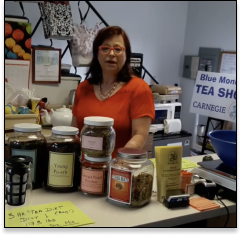

About Us
Opened in October 2002, Blue Monkey Tea is a specialty tea store located in Squirrel Hill neighborhood of Pittsburgh, Pennsylvania. Our tea shop features over 400 varieties of teas, a vast assortment of teapots and tea gadgets, and international sweets. In addition, we offer tea classes and tea tastings every month.
History
The original store, Wicks & Beans, was established in May of 2002. We expanded our assortments and space, and changed the name of the store to Margaret's Fine Imports. On May 9th, 2017 we opened a store in Carnegie and changed both store names to Blue Monkey Tea. The Carnegie PA location moved to Pittsburgh in February of 2019.
We've grown into a classic neighborhood Tea Specialty store that consistently offers excellent service to our beloved customers. We can’t wait to serve you!
About the Owner
Margaret Harris is the owner of Blue Monkey Tea and is one of Pittsburgh's primary tea experts. As a tea consultant, Margaret regularly conducts classes and workshops on tea at a variety of venues, including colleges, clubs, associations, corporations, and at her store. A native of Poland, where tea is the primary household beverage, her lifelong experience with tea began quite early: she may have had her first "cup of tea" when she was only one day old!
Margaret is a graduate of the Warsaw Medical College, which has enabled her to incorporate her medical knowledge into her teachings on the health aspects of teas and tisanes. She is a founding member of the Western Pennsylvania Tea Business Association, as well as several other business and professional groups.